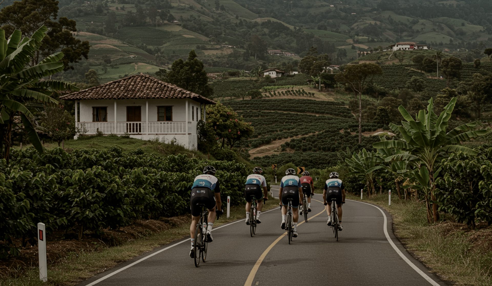

World's Coffee & Cycling Festival — Oportunidad de Inversión y Patrocinio Premium (2027 - 2028). La plataforma permanente de promoción internacional de destino, desarrollo deportivo y dinamización económica.
El Manifiesto
Tour del Café: The World's First Coffee & Cycling Festival
El Tour del Café es una plataforma para conectar a Colombia con el mundo a través de sus dos grandes símbolos: el café y el ciclismo. Colombia tiene una historia que merece seguir siendo contada. Hay países reconocidos por sus industrias, otros por sus recursos naturales y otros por su legado cultural.
Colombia tiene el privilegio de ser reconocida por dos de sus mayores expresiones de identidad: el café y el ciclismo. El café representa nuestra tierra, nuestras montañas, nuestra tradición, nuestra capacidad de transformar el trabajo en excelencia. El ciclismo representa esfuerzo, resiliencia, disciplina, superación y la capacidad de competir con los mejores del mundo desde los territorios más diversos. Ambos nacieron en las mismas montañas. Ambos transforman vidas. Ambos proyectan la mejor imagen de Colombia ante el mundo.


1.2 Nuestro Propósito
Posicionar a Colombia como el principal destino mundial donde convergen el ciclismo, el café, el turismo y la cultura, generando oportunidades de desarrollo económico, social y deportivo para las regiones y sus comunidades.
1.3 Nuestra Misión
Diseñar y desarrollar un evento internacional de categoría UCI 2.1, masculino y femenino, que reúna a algunos de los mejores equipos y corredores del mundo en un recorrido por las montañas y paisajes cafeteros de Colombia, integrando durante toda la temporada experiencias deportivas, culturales, académicas, turísticas y comerciales que generen valor simultáneamente para:
- Los corredores y equipos.
- Los aficionados.
- Las regiones anfitrionas.
- La industria del café.
- El sector turístico.
- Los patrocinadores e inversionistas.
¿Para qué el Tour del Café?
El Tour del Café es una plataforma que conecta a Colombia con el mundo a través del café y el ciclismo, actuando bajo cuatro grandes propósitos de transformación sectorial.
2.1 Promover a Colombia ante el mundo
El Tour del Café será una vitrina internacional para mostrar la riqueza cultural de nuestras regiones, la calidad de nuestros cafés especiales, paisajes, infraestructura turística, capacidad organizativa y el talento deportivo nacional. Cada etapa es una invitación a descubrir el país.
2.2 Desarrollo Económico Regional
Motor de dinamización para los territorios anfitriones. Los grandes eventos deportivos internacionales generan impactos directos en hotelería, gastronomía, transporte, comercio, turismo y servicios especializados, convirtiéndose en una herramienta de atracción de inversión.
2.3 Conectividad y Comunidad Global
No comienza con la primera etapa ni termina con la premiación. Su propósito es construir una comunidad internacional de aficionados que compartan de forma permanente a través de activaciones locales y globales, atrayendo operadores y prensa internacional.


2.4 Desarrollo del ciclismo colombiano
El ciclismo moderno exige procesos permanentes de formación. Incorporamos iniciativas de capacitación dirigidas a entrenadores, nutricionistas, preparadores físicos, médicos deportivos, masajistas y directores deportivos.
Tour del Café Junior: Eventos de apertura enfocados en categorías juveniles y prejuveniles para acercar a las nuevas generaciones a la competencia de nivel internacional.
2.5 Una plataforma para todos los ciclistas
El componente aficionado es vital:
- Gran Fondo Tour del Café: Diseñado para que miles de ciclistas amateurs experimenten las mismas carreteras e infraestructura que los profesionales.
- Tour del Café Expo: Espacio comercial que reúne marcas, innovación tecnológica, equipamiento, cafés especiales y conferencias culturales.
Ecosistema del Evento
El Tour del Café no es una competencia aislada. Es la primera plataforma global estructurada que une el ciclismo masivo con la cultura de cafés especiales.
3.1 Gran Fondo Tour del Café
Será el primer evento amateur masivo de equipos contra equipos (Teams vs Teams). Durante 3 días, ciclistas de todo el mundo compartirán con grandes estrellas históricas del ciclismo en un formato similar a los eventos Hammer: desafíos específicos de escalada y de sprint para probar el rendimiento grupal.
3.2 Tour del Café UCI 2.1
El activo cumbre y motor de visibilidad de la marca. Una competencia oficial para las ramas masculina y femenina bajo estándares de la UCI (febrero 2028). Integra de forma orgánica el café de origen y el ciclismo élite en un Hub inmersivo de experiencias y negocios internacionales.
3.2.1 Puntos Clave del Modelo de Operación (Host City Model)
Inspirado en las grandes clásicas y monumentos europeos, evitamos traslados diarios ineficientes centralizando operaciones en un hub hotelero principal que rota anualmente.
Centralización Operativa
Concentración del centro de operaciones, parque técnico, prensa y televisión en un máximo de dos sedes por edición (Antioquia y Eje Cafetero: Quindío, Caldas y Risaralda).
Reducción de Costos
Disminución del 40% en costos de operaciones gracias a la eliminación de traslados largos de la caravana y montajes repetitivos.
Inyección Local Directa
Retención del 100% del gasto de los asistentes en la región sede. Los equipos, patrocinadores y aficionados permanecen en el mismo hub hotelero de 4 a 5 días.
3.2.2 Arquitectura Deportiva y de Experiencias
- Paridad Deportiva UCI 2.1: Carreras de categoría internacional masculino y femenino, con las mismas condiciones de premios, recorrido y visibilidad de medios.
- Gran Fondo y Expo: Integración comercial masiva ferial donde marcas, exportadores de café de especialidad y firmas internacionales interactúan directamente con los asistentes y compradores VIP.
- Sostenibilidad y Visibilidad Permanente: Creación de Fan Zones fijas de alto impacto y VIP Coffee Labs operativas a lo largo de toda la semana del festival.

De la Finca a la Taza
En el festival, el café de especialidad no es solo un patrocinador; es una cadena de valor integrada y auténtica que conecta directamente a los caficultores de origen con el estilo de vida de los ciclistas profesionales y aficionados.

4.1 A Coffee Family
El Origen, el Impacto Social y la Cadena B2B
- Rol de Producción: Empresa encargada de la producción de origen y desarrollo de café especial en alianza con más de 50 familias caficultoras.
- Propósito en el Festival: Representa el corazón agrícola del proyecto, garantizando trazabilidad, sostenibilidad ambiental y comercio justo.
- The Roaster’s Lounge & Cupping Sessions: Espacio B2B en la Expo y en Roadshows internacionales (Bélgica, Países Bajos, EE.UU. y Canadá) para conectar microtostadores globales con microlotes de origen.
- Origin Field Experience: Muestra técnica de procesos de beneficio, fermentaciones y trazabilidad para compradores de café verde, prensa e invitados VIP.
4.2 Mítico Cycling Coffee
La Experiencia B2C y la Cultura de Vida
- Brazo Comercializador: Marca lifestyle que transforma el café tostado por A Coffee Family en la bebida ideal y saludable para el ciclista.
- Expendio Público Oficial: Responsable del expendio minorista y servicio de bebidas preparadas durante las actividades del festival (Gran Fondo, UCI 2.1, rodadas).
- Coffee Bars & Pop-Up Labs: Estaciones de espresso, filtrados y Cold Brew en zonas de salida/llegada, VIP Hospitality y puntos de hidratación.
- Tienda Oficial & Rides: Venta de café en grano/molido, Drip Packs y organización de los Coffee Rides oficiales en Colombia y el exterior.
Matriz de Impacto Económico
El impacto financiero proyectado se distribuye en sectores clave del desarrollo turístico regional. Alterna el escenario para visualizar el crecimiento proyectado en la zona de influencia.
Proyecciones de Derrama Económica
Valores expresados en Millones de Pesos (COP)
Calendario y Activaciones de Promoción
A diferencia de eventos de una sola semana, el Tour del Café es una plataforma activa los 365 días del año estructurada en objetivos estratégicos y rutas nacionales e internacionales.
Promoción de Destino
Posicionar a Colombia y regiones sede como referentes globales de turismo y cultura.
Captación de Turistas
Facilitar la llegada de entusiastas y viajeros de alto gasto para consumir experiencias locales.
Generación de Comunidad
Construir un tejido permanente de aficionados que conversan alrededor del café y el ciclismo.
Hito Fundacional: Gran Fondo Amateur
Estreno del formato por equipos amateur (Teams vs Teams) de 3 a 5 días de duración en el departamento del Quindío, validando el ecosistema de marcas.
Evento Profesional Élite UCI 2.1
Integración del evento élite oficial UCI 2.1 Masculino y Femenino al Gran Fondo amateur, atrayendo equipos profesionales WorldTour y cobertura televisiva internacional.
Activaciones Nacionales Continuas
Rodadas educativas, cataciones urbanas y eventos del sector para construir comunidad en los centros económicos del país.
Activaciones en Europa y EE.UU.
Fomento del evento en los mercados principales del ciclismo. Rodadas conjuntas y cataciones especializadas con prensa y marcas asociadas.
Europa: Bélgica, Países Bajos, Italia.